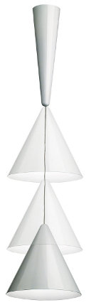

Description
|  |
Powder-coated spun aluminium lamp with a hidden pulley system. In this lamp the cord winder is concealed by a cone shaped ceiling rose (16 cm diameter x 56 cm high) which supports the reflector head, another larger cone (39 cm diameter x 38 cm high) and the simple lead supplying power to the bulb. The variable distance between the two cones allows different focuses and generates shifting perceptual relationships between the two cones.
HIERARCHIAL DECOMPOSITION
the object can be divided into two parts:
- Upper cone
- Lower cone
For both cones was used a parametric function, which has as input the points of control and domination, that returns a rotational surface. In the end are embedded in a structure, with the cable connecting the two cones and the bulb.
Upper cone
 |
Lower cone
 |  |
CODE
/**
* @author Gianmarco De Blasio
*/
//diabolo
//domains
var domain = DOMAIN([[0,1],[0,2*PI]])([40,40]);
var domain1 = DOMAIN([[0,1],[0,2*PI]])([40,70]);
var domain2 = DOMAIN([[0,1],[0,2*PI]])([20,20]);
//auxiliary functions
var surface = function (controlpoints, domainSurface) {
var curve = BEZIER(S0)(controlpoints);
var mapping = ROTATIONAL_SURFACE(curve);
return MAP(mapping)(domainSurface);
}
var normalize = function(rgb){
return [rgb[0]/255,rgb[1]/255,rgb[2]/255];
}
//diabolo
//small cone
var smallConeCP1 = [[4.2,0,0],[2.35,0,3.81],[0.5,0,7.6]];
var smallCone1 = surface(smallConeCP1,domain1);
var smallConeCP2 = [[0.5,0,7.6],[0.4,0,7.9],[0.05,0,8]];
var smallCone2 = surface(smallConeCP2,domain);
var smallCone = STRUCT([smallCone1,smallCone2]);
//big cone
var bigConeCP1 = [[1.6,0,11.2],[1.05,0,5.8],[0.5,0,0.4]];
var bigCone1 = surface(bigConeCP1,domain1);
var bigConeCP2 = [[0.5,0,0.4],[0.4,0,0.1],[0.05,0,0]];
var bigCone2 = surface(bigConeCP2,domain);
var bigCone = T([2])([20])(STRUCT([bigCone1,bigCone2]));
//cable
var cable = COLOR([0,0,0])(T([2])([8])(CYL_SURFACE([0.05,12])([20])));
//bulb
function bulb(raggio,altezza){
var bulbCP = [[raggio,0,0],[0,0,altezza/3],[raggio*20,0,2*altezza/3],[raggio*20,0,9*altezza/10],[0,0,altezza]]
var bulb = surface(bulbCP,domain2);
return COLOR([1,1,0])(T([2])([8])(R([0,2])([PI])(bulb)));
}
//complete lamp
var model = STRUCT([COLOR([1.5,1.5,1.5])(smallCone),COLOR([1.5,1.5,1.5])(bigCone),cable,bulb(0.05,3)]);
DRAW(model);